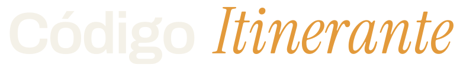

Manual de identidade visual

Identidade Estrada 1 — Lâmpada de hostel · aprovada em 02.07.2026
Código Itinerantev1 · 2026
MIV · sumário
Sumário
- A marca e o conceito
- A regra do acento
- Wordmark — construção
- Wordmark — versões de cor
- Monograma
- O que não fazer
- Paleta — neutros
- Paleta — acentos
- Tipografia
- Aplicações
Código Itinerante · MIV02
01 · a marca
Sites para hostels,
pagos em noites.
O Código Itinerante constrói sites institucionais para hostels e pousadas, em permuta por noites de hospedagem.
Conceito visual — base escura, tipografia protagonista, elegância contida, com um acento quente. A narrativa da cor: o âmbar é a luz da lâmpada de hostel à noite, o pôr-do-sol na estrada.
Tom — profissional com calor humano. Nem frieza de portfólio dev, nem informalidade de agência descolada. O público principal é o dono de hostel.
Código Itinerante · MIV03
02 · a regra do acento
Pontos de calor,
nunca uma marca laranja.
Princípio nº 1 da identidade: a cor quente aparece pouco e sempre com intenção — um grifo, um link, uma linha, uma palavra.
A marca é preta (ou clara, em papel) com pontos de calor. Os acentos ocupam uma fração pequena de qualquer peça; o resto é neutro.
Certo
Um site que trabalha enquanto você viaja.
Errado
Um site que trabalha enquanto você viaja.
Código Itinerante · MIV04
03 · wordmark
O nome conta
a própria história.
O logo é tipográfico puro, sem símbolo. Código em sans rígida é a estrutura do código; Itinerante em itálico serifado é o movimento da viagem. As duas palavras na mesma linha, separadas por espaço simples, alinhadas pela baseline.
| Parte | Fonte | Peso | Detalhes |
|---|
| Código | Archivo | 600 | tracking −0.03em |
| Itinerante | Instrument Serif Italic | 400 | corpo ~10% maior que "Código" |
O wordmark se sustenta pequeno (validado a ~13px de corpo). Abaixo disso — favicon, avatar — usar o monograma.
Código Itinerante · MIV05
04 · wordmark · versões de cor
Uma versão para
cada fundo.
Fundo escuro (Breu) — Cal + Âmbar
Fundo claro (Papel) — Tinta + Queimado
Monocromática (fallback) — cor do texto, mantém o itálico serifado
Código Itinerante · MIV06
05 · monograma
C I, com o movimento
na inclinação.
Para tamanhos minúsculos — favicon, avatar — onde a serifa morre. "C" e "I" ambos em Archivo 600, mesmo corpo e mesmíssimo peso, com o "I" inclinado 12° e na cor de acento: Âmbar sobre escuro, Queimado sobre claro.
Sem serifa: aqui o movimento da viagem fica só na inclinação.
Código Itinerante · MIV07
06 · o que não fazer
Restrições
de uso.
- Não inverter o par: serifa em "Código", sans em "Itinerante".
- Não aplicar o âmbar nas duas palavras, nem em "Código" isolado.
- Não usar itálico na palavra "Código" nem regular em "Itinerante".
- Não adicionar ícones, contornos, sombras ou gradientes ao wordmark.
- Não usar a palavra "Código" ou "Itinerante" sozinha como marca.
- Sobre escuro, nunca usar Queimado (é a versão para papel).
- Sobre claro, nunca usar Âmbar ou Dourado em texto — contraste insuficiente.
- Preto puro #000 e branco puro #FFF não fazem parte da paleta — usar Breu e Cal/Papel.
Código Itinerante · MIV08
07 · paleta · neutros
A base é neutra.
Breu
#0A0A09
Fundo principal (escuro)
Grafite
#161513
Superfícies e cards sobre Breu
Cal
#F4F1E8
Texto sobre escuro
Cinza-pedra
#97928A
Texto secundário sobre escuro
Papel
#FBF9F4
Fundo de documentos
Tinta
#1A1915
Texto sobre claro
Código Itinerante · MIV09
08 · paleta · acentos
O calor, dosado.
Âmbar
#E39A3B
Acento principal sobre escuro: links, grifos, "Itinerante"
Barro
#C4693F
Acento secundário sobre escuro, estados hover
Dourado
#EFC780
Detalhes finos sobre escuro: réguas, ícones pequenos
Queimado
#B85C2E
O acento em fundo claro — versão do âmbar com contraste para papel
Proporção: os acentos ocupam uma fração pequena de qualquer peça; o resto é neutro.
Código Itinerante · MIV10
09 · tipografia
Tipografia protagonista.
Archivo
Display / títulos · 500–700Headlines, wordmark, títulos de documento. Também no corpo, em 400–500.
Instrument Serif
Acento itálico · 400"Itinerante" e palavras grifadas em headlines. Tempero: uma palavra ou expressão por título, nunca frases inteiras.
IBM Plex Mono
Rótulos / técnico · 400–500Eyebrows, metadados, hex, detalhes dev. Caixa alta, letter-spacing largo (~0.12em), corpo pequeno (11–12px).
Todas livres (Google Fonts). No site, auto-hospedadas — mesmo padrão dos sites de cliente.
Código Itinerante · MIV11
10 · aplicações
Documentos, site
e assinatura.
Documentos (proposta, briefing, contrato) — fundo Papel, texto Tinta. Cabeçalho: wordmark à esquerda; tipo do documento à direita em IBM Plex Mono caps, cor Queimado; régua de 2px em Queimado fechando o cabeçalho. Destaques do corpo em Queimado, negrito.
Site do projeto — fundo Breu; hero tipográfico com itálico em Âmbar. Cards em Grafite, cantos suaves (raio 12px). Botão primário: fundo Âmbar, texto Breu, pílula.
Assinatura e avatar — assinatura de e-mail com o wordmark pequeno, na versão de cor conforme o fundo; avatar e favicon com o monograma.
Código Itinerante · MIV12
codigo-itinerante.vercel.appMIV v1 · 2026